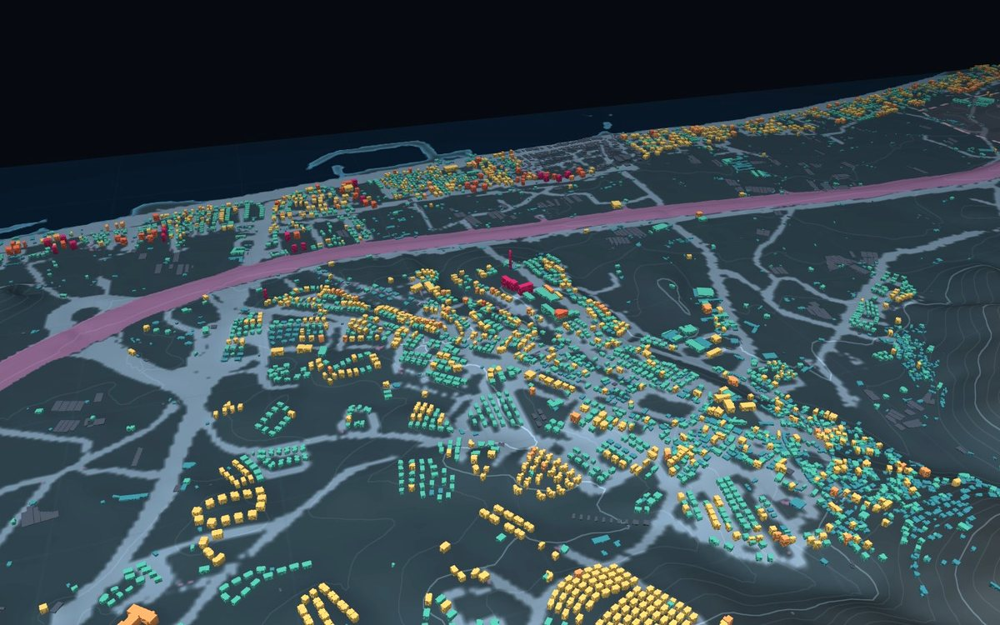
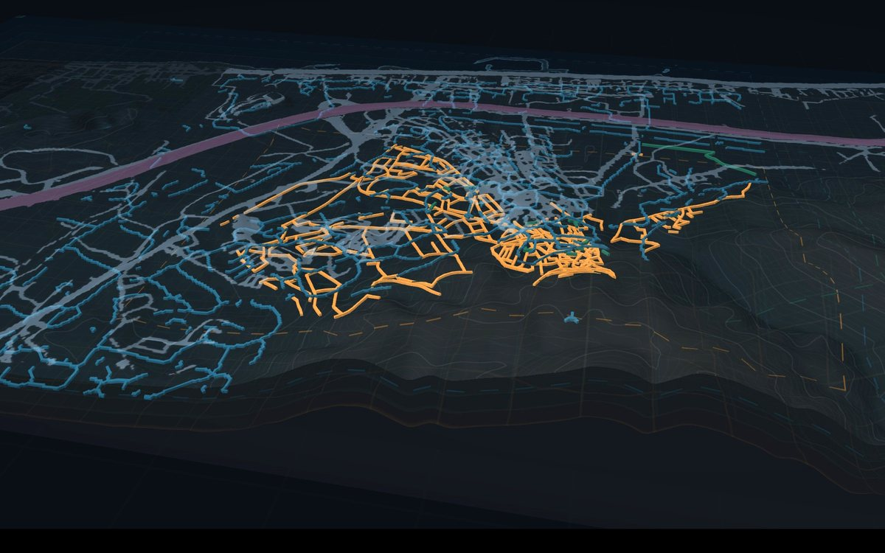
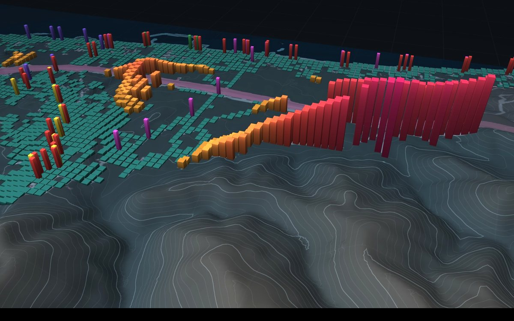
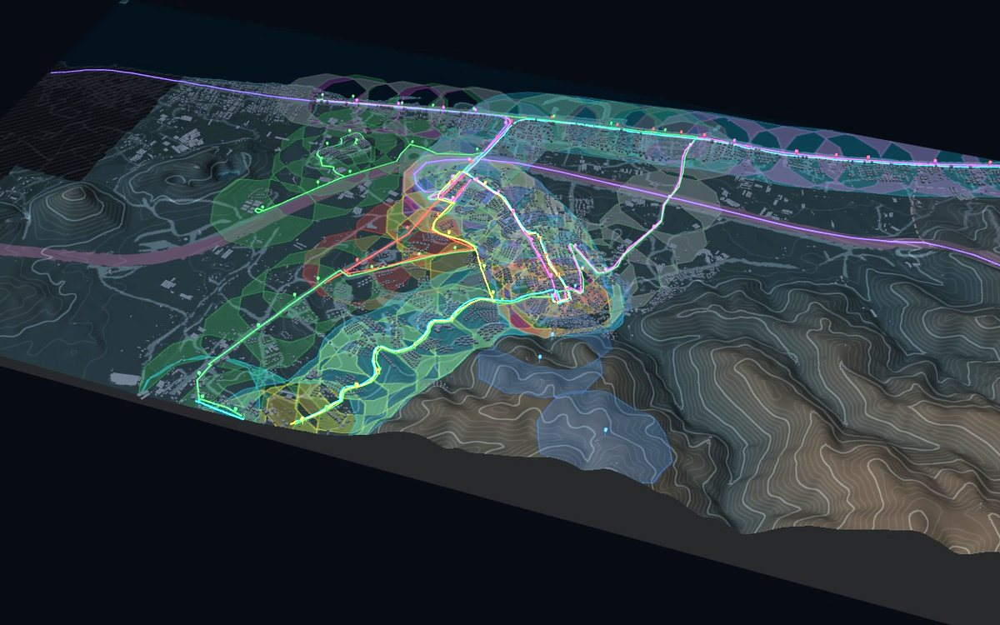
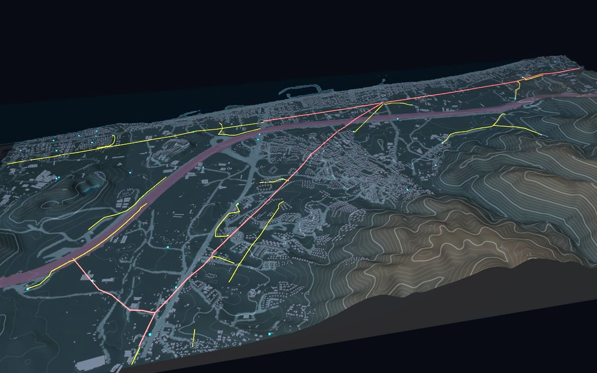

Güzelbahçe3B
İlçenin gerçek arazisi, binaları, altındaki boru ağları, otobüs hatları ve elektrik şebekesi; döndürüp yakınlaşabileceğiniz, gezintiyle izleyebileceğiniz beş modelde.
Modelleri keşfedin
Her model tam ekran açılır. Sürükleyerek döndürün, tekerlek ya da iki parmakla yakınlaşın veya gezintiyi başlatın.

Yeni · Yapı stokuKent modeli
Halihazır haritadaki binalar, paftada yazan kat adediyle gerçek arazinin üzerinde yükseliyor. Kat adedine ya da kullanıma göre renklendirin, yüksek binaları süzün, bir binanın üzerine gelip türünü ve kat adedini görün.
- Paftadaki kat adediyle binalar
- Kat adedi ya da kullanıma göre renk, kat süzgeci
- 8 duraklı gezinti

Su altyapısıYer altı ağları
İçme suyu, yağmur suyu ve atık su hatları gerçek arazinin altında, derinlik sırasıyla. Zemini saydamlaştırın, katmanları açın.
- 3 boru ağı, katman katman
- Güneybatı Arıtma Tesisi: 2019'da kapasitenin %108,2'si (hesap)
- 8 duraklı gezinti

Ulaşım ve atıkErişim boşlukları
ESHOT durağına ve çöp konteynerine uzak kalan yerleşim alanları, 50 m'lik hücrelerle. Eşiği ne kadar aşarsa sütun o kadar yükselir.
- Yerleşim alanının %17,3'ü durağa 400 m'den uzak
- Ayarlanabilir yürüme eşiği
- 9 duraklı gezinti

Yeni · Toplu taşımaToplu taşıma
Çalışmadaki 6 ESHOT hattının ve dolmuşun güzergâhları, durakları ve 400 m yürüme alanları. Hatları açıp kapatın; seçili hatların alanında kalan bina payı anında hesaplanır.
- 7 hat · güzergâh, durak, 400 m alanı
- Hatları açıp kapatın, bina payı anında hesaplanır
- 5 duraklı gezinti

Yeni · EnerjiElektrik şebekesi
Halihazır haritadaki elektrik direkleri, pilonlar, trafolar, sokak lambaları, havai hatlar ve enerji nakil hattı, gerçek arazi üzerinde.
- Direk, pilon, trafo ve sokak lambası
- Havai hat ve enerji nakil hattı
- 5 duraklı gezinti
Nasıl hazırlandı
Halihazır harita
Güzelbahçe halihazır haritasının NetCAD paftaları (2015, 1:1000, ITRF96) doğrudan okundu: kot noktaları, kat adedi yazılarıyla binalar ve elektrik unsurları.
Ekip verisi
Çalışma ekibinin altyapı ve ulaşım haritaları, CBS katmanları, QGIS çizimleri ve raporu. Kaynaklar ve sınırlar her modelin içinde yazılı.
Model
20 m'lik arazi modeli üzerinde, tarayıcıda WebGL ile çiziliyor. Eklenti gerekmez.